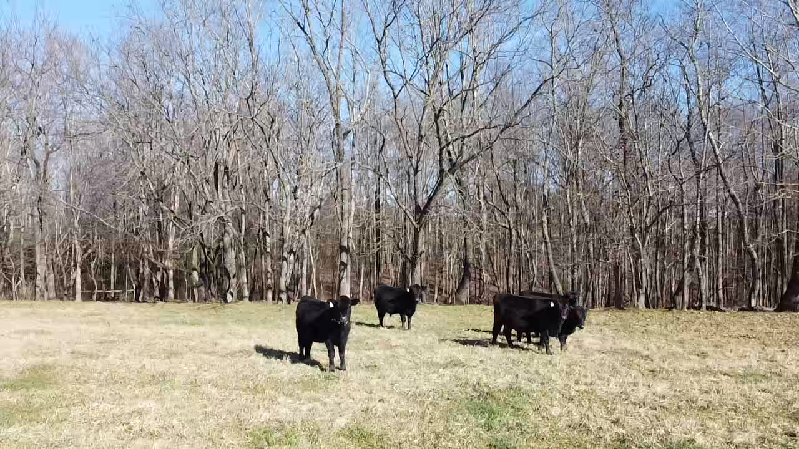
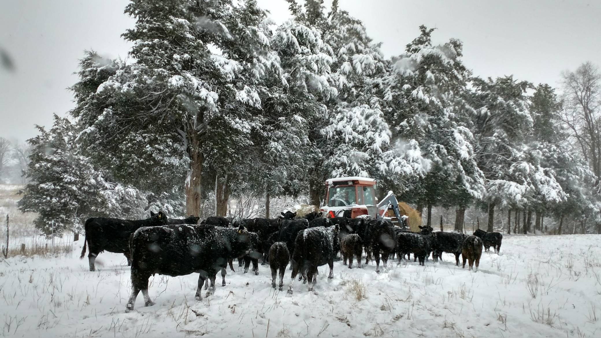

Country Acres Farm is a family owned and operated farm in the heart of Catawba County and Surry County. We have a lifetime of experience farming. We raise cattle with good genetics for grass. Our cattle are rotationally grazed. We move them to different pastures. They spend the hot summer months on 150 acres along Mitchell’s River in Surry County and spend the winter at our farm in Catawba County. We sell beef raised from our farm by individual cuts or quarters/halves/wholes. Our beef is vacuum packed at a USDA inspected facility.
Tim followed in his grandfather’s footsteps. His grandfather raised cattle and ran an abattoir until his retirement. As a young child at the age of 8, Tim attended Catawba Valley Cattlemen’s meetings with his grandfather. He even participated in preparing their famous beef BBQ when it was prepared in a pit in the ground. Tim is an active member of the Catawba Valley Cattlemen’s Association, North Carolina Cattlemen’s Association. We have our NC Meat Handler’s License and Beef Quality Assurance certification.
